Key Takeaways
- Automatically obtain a Microsoft Entra Kerberos Ticket Granting Ticket during logon.
- Supports both Microsoft Entra-joined and Hybrid Microsoft Entra-joined devices..
- Supports organizations using a hybrid identity environment with Microsoft Entra ID and active directory.
- Improves the user sign-in experience by reducing additional prompts.
Hey let’s learn about Configure MS Entra Kerberos TGT Retrieval During Windows Sign-In using Intune for Entra-Joined and Hybrid-Joined Devices. This policy setting allows retrieving the Microsoft Entra Kerberos Ticket Granting Ticket during logon. If you disable or don’t configure this policy setting, the Microsoft Entra Kerberos Ticket Granting Ticket isn’t retrieved during logon. otherwise, the Microsoft Entra Kerberos Ticket Granting Ticket is retrieved during logon.
Table of Contents
What are the Advantages of this Policy?
This policy setting allows retrieving the Microsoft Entra Kerberos Ticket Granting Ticket during logon. some advantages are:
1. The Kerberos ticket retrieval is obtained automatically during logon.
2. Quick access to resources after logon.
3. Kerberos authentication is more secure than another authentication methods.
4. Reduces dependency on traditional VPNs
How to Enable Cloud Kerberos Ticket Retrieval Policy using Intune
Cloud Kerberos ticket retrieval enabled allows devices to automatically retrieve a Microsoft Entra Kerberos ticket granting ticket during logon. also, it improves the user authentication experience. enables secure access to file shares, printers, and applications.
How to Create Cloud Kerberos Ticket Retrieval Enabled policy
The Cloud Kerberos Ticket Retrieval Enabled policy can be created through the Microsoft Intune admin center. Open the Microsoft Intune Admin Centre. Then go to device>configuration. Click on the dropdown arrow of the create option and choose new policy.
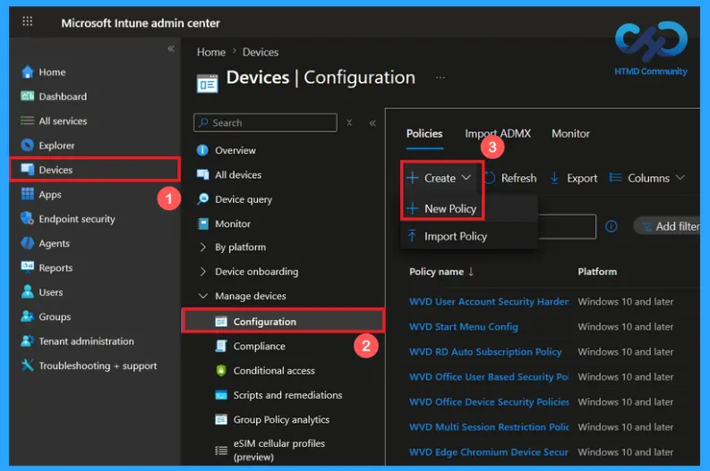
Create a Profile of Cloud Kerberos Ticket Retrieval Enabled policy
Click on New policy to open profile creation window. Choose platform as windows 10 and later. Then select Settings catalog as the profile type. Click on the Create button to continue.
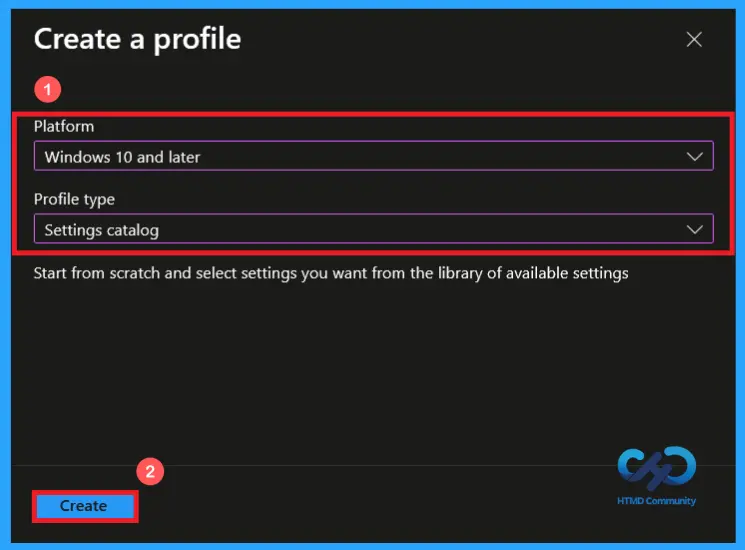
Basics Tab: Name and Description Configuration
On the basics tab, you can give a proper name for the policy. Here, I have given a proper policy name, Cloud Kerberos Ticket Retrieval Enabled. Providing a policy name is an important step to understand the policy. You may also describe additional information. This step is optional. Providing a name and description makes the policy more understandable. Click on the Next button to continue.
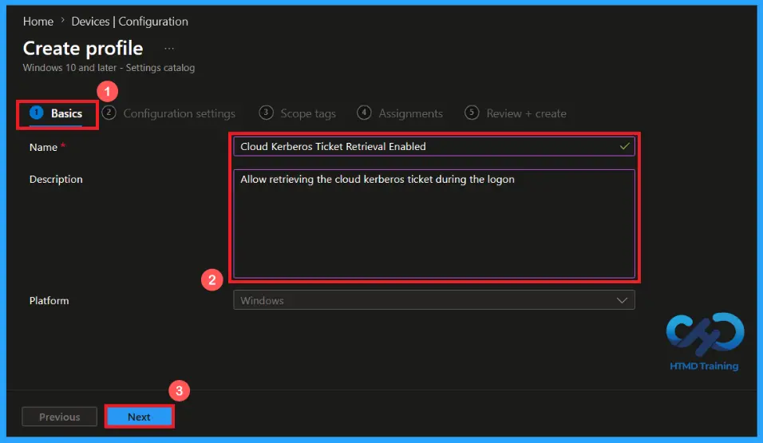
Configure Enable Cloud Kerberos Ticket Retrieval Policy
In the configuration settings tab, click on Add Settings to open the settings picker. Here you can search for your policy. I searched for the Kerberos category and selected Cloud Kerberos Ticket Retrieval Enabled. After selecting the appropriate setting, add it to the profile.
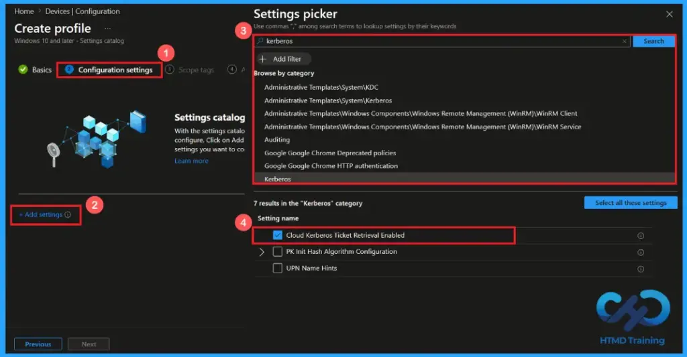
Disabling Cloud Kerberos Ticket Retrieval policy
By default, the policy will be disabled. If you disable or don’t configure this policy setting, the Microsoft Entra Kerberos Ticket Granting Ticket isn’t retrieved during logon. Users may not be able to access Kerberos based resources automatically need authentication for accessing. Click on next to continue.
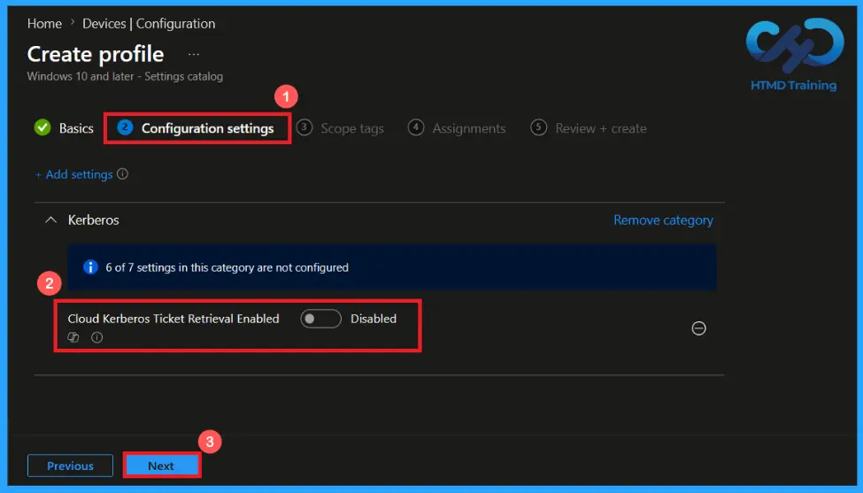
Enabling the Cloud Kerberos Ticket Retrieval Policy
When the policy is enabled, the device retrieves a Microsoft Entra Kerberos Ticket Granting Ticket during logon. This allows users to access Kerberos-authenticated resources without any additional authentication. This provides a secure sign-in experience. Click Next to continue.
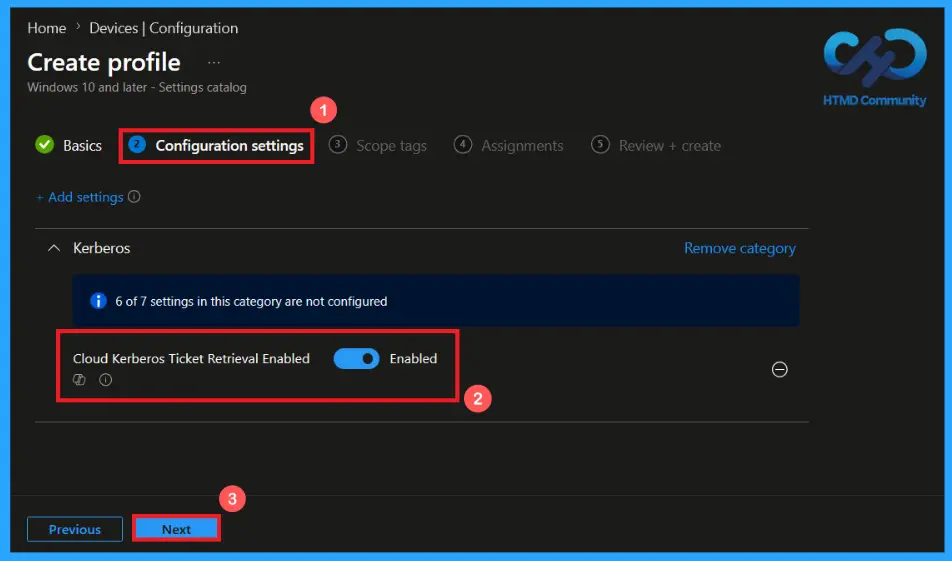
In the scope tags section, you can assign scope tags to the policy to control which administrators can view and manage within Intune. By default, the default scope tag is applied; you can select additional tags if required. Scope tags maintain better control over policy management. It’s not compulsory. Then click Next to continue.
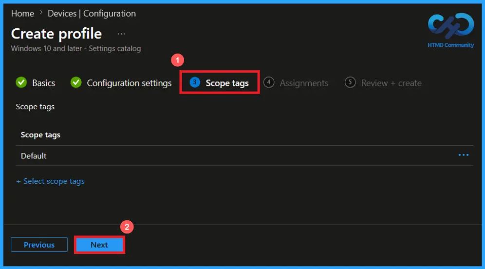
Assignments Tab to Assign Group
In the Assignments tab, specify the users or devices that should receive the policy. User includes groups. You can add a group by clicking on Add group. Select the required group. Here, I added the group HTMD- Test Policy. Review the assignment settings and click Next to continue.
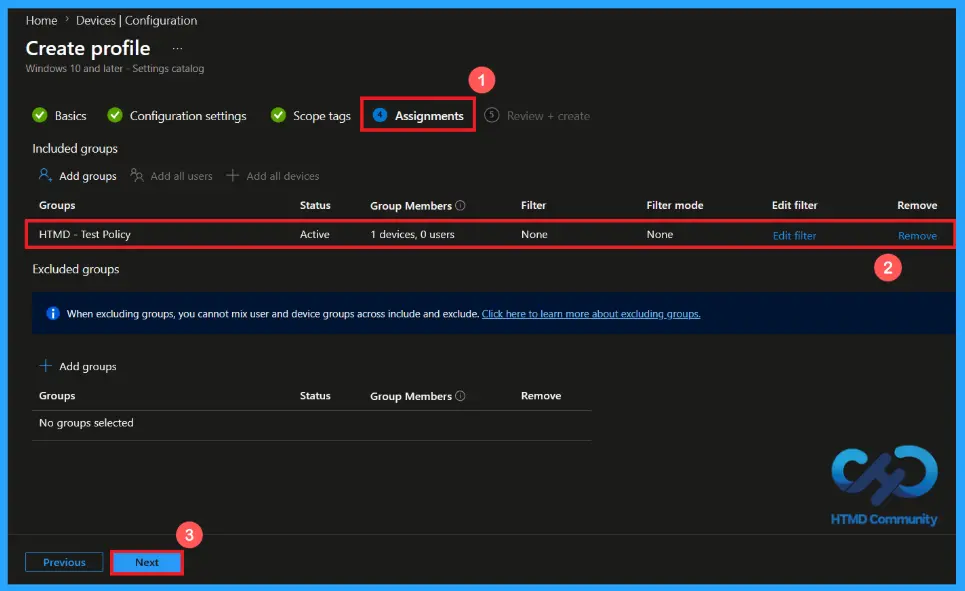
Creating the Cloud Kerberos Ticket Retrieval Enabled Policy
At the final Review + Create step, verify all configured settings to ensure the policy is set correctly. This page gives a clear summary of the policy details. If any changes are required, go back to the previous page if needed. After reviewing the settings, click on Create to complete the policy, and a notification confirms that the policy “Cloud Kerberos Ticket Retrieval Enabled” was created successfully.
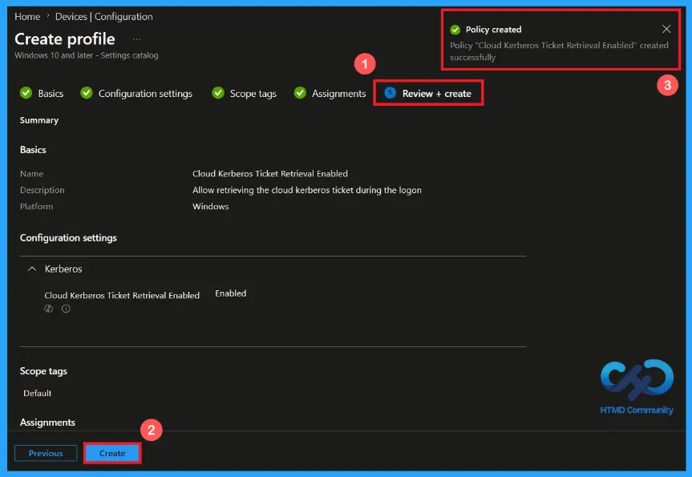
Device and User Check-in Status
To view a policy status, go to Devices > Configuration in the Intune portal, select Cloud Kerberos Ticket Retrieval Enabled policy. Open the policy and review the Device and User Check-in Status to verify whether the status has shown as succeeded (1). Use manual sync in the Company Portal to speed up the process.
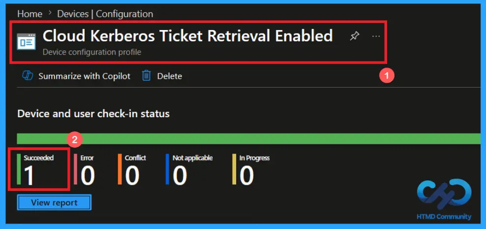
Client-Side Verification of the policy
To verify that the policy has been successfully applied on a client device. Open Event Viewer and navigate to Applications and Services Logs > Microsoft > Windows > Device Management > Enterprise Diagnostic Provider > Admin. From the list of policies, use the Filter Current Log option and search for Intune event 813.
MDM PolicyManaqer: Set policy int, Policy: (CloudKerberosTicketRetrievalEnabled), Area:
(Kerberos), EnrollmentID requesting merge: (EB427D85-802F-46D9-A3E2-D5B414587F63), Current
User: (Device), Int: (0x1), Enrollment Type: (0x6), Scope: (0x0).
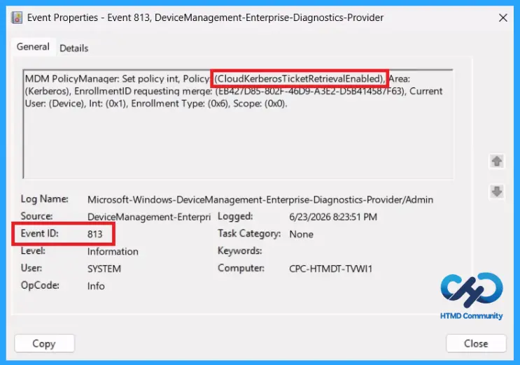
Windows Configuration Service Provider (CSP)
The Windows Configuration Service Provider (CSP) defines how policy settings are applied and managed on Windows devices. It is a feature used by organisations to manage and control settings on Windows 10 and 11 devices. It explains what each policy does, what settings or values can be used, and how it connects to older Group Policy settings (Group Policy Mapping details).
Description framework properties: The following table shows the description framework properties of the Cloud Kerberos Ticket Retrieval Enabled policy.
| Property name | Property value |
|---|---|
| Format | int |
| Access Type | Add, Delete, Get, Replace |
| Default Value | 0 |
Configure MS Entra Kerberos TGT Retrieval During Windows Sign-In using Intune for Entra-Joined and Hybrid-Joined Devices – Table.1
Allowed values: It refers to specific options or settings that users are allowed to apply when configuring the policy. These values define how the policy behaves on Windows devices.
- 0(Default) – Disabled.
- 1 – Enabled.
Group Policy Mapping (Group Policy Analytics) in Microsoft Intune assists in transitioning existing Group Policy Objects (GPOs) to cloud-based management. The Scope, Edition, and Applicable OS are given in the table below:
| Name | Value |
|---|---|
| Name | CloudKerberosTicketRetrievalEnabled |
| Friendly Name | Allow retrieving the Azure AD Kerberos Ticket Granting Ticket during logon |
| Location | Computer Configuration |
| Path | System > Kerberos |
| Registry Key Name | Software\Microsoft\Windows\CurrentVersion\Policies\System\Kerberos\Parameters |
| Registry Value Name | CloudKerberosTicketRetrievalEnabled |
| ADMX File Name | Kerberos.admx |
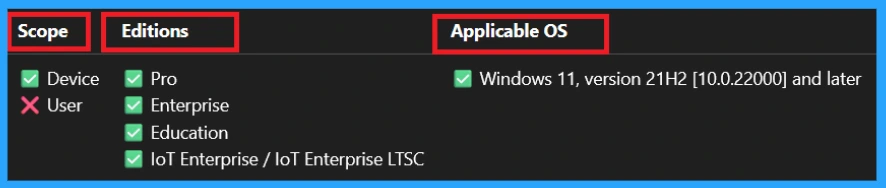
How to Remove the Assigned Group from the Cloud Kerberos Ticket Retrieval Enabled
Sometimes, we need to remove a group from a policy assignment for security updates. Open the policy from the Configuration tab and click on the Edit button on the Assignment tab. Then Click on Remove button on this section to remove the policy. Click Review + Save after making the change.
For detailed information, you can refer to our previous post – Learn How to Delete or Remove App Assignment from Intune using by Step-by-Step Guide.
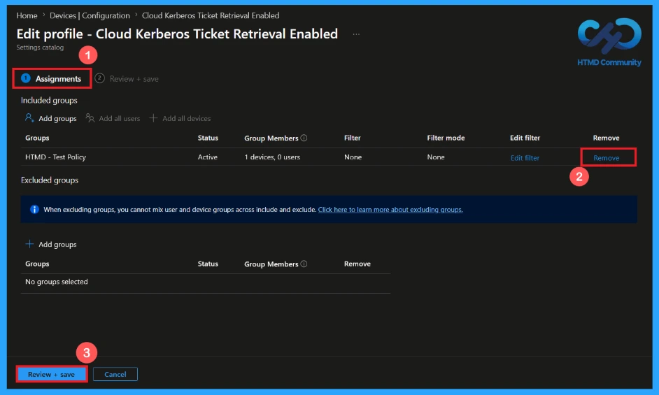
How to Delete the Cloud Kerberos Ticket Retrieval Enabled policy
To delete an Intune policy for security or operational reasons. First, search for the policy name in the configuration section. After finding the policy name, click on the 3-dot menu next to it and tap the delete option.
For detailed information, you can refer to our previous post – Learn How to Delete or Remove App Assignment from Intune using by Step-by-Step Guide.
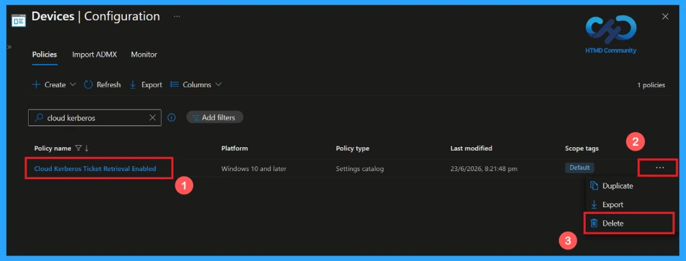
Need Further Assistance or Have Technical Questions?
Join the LinkedIn Page and Telegram group to get the latest step-by-step guides and news updates. Join our Meetup Page to participate in User group meetings. Also, Join the WhatsApp Community and WhatsApp Channel to get the latest news on Microsoft Technologies. We are there on Reddit as well.
Author
Anoop C Nair has been Microsoft MVP from 2015 onwards for 10 consecutive years! He is a Workplace Solution Architect with more than 22+ years of experience in Workplace technologies. He is also a Blogger, Speaker, and Local User Group Community leader. His primary focus is on Device Management technologies like SCCM and Intune. He writes about technologies like Intune, SCCM, Windows,
Cloud PC, Windows, Entra, Microsoft Security, Career, etc